Thông tin học viên
Họ và tên: Doãn Anh Đức
Mã số sinh viên: 25020547
Mã lớp học phần: VNU1001_E252006
Cơ sở đào tạo: Trường Đại học Công nghệ - ĐHQGHN (VNU-UET)
Nhật ký thực trình hệ thống
-
01. Khởi chạy File ExplorerSử dụng tổ hợp phím tắt tiêu chuẩn
Windows + Ehoặc kích hoạt trực tiếp biểu tượng thư mục lưu trữ trên thanh Taskbar hệ thống.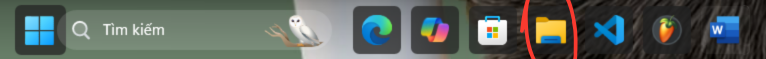
-
02. Định tuyến và truy cập phân vùng lưu trữTại cấu trúc phân nhánh bên trái cây thư mục, truy cập vào mục This PC, tiến hành điều hướng sang phân vùng ổ đĩa dữ liệu không thuộc hệ thống (ví dụ: ổ
D:hoặc ổE:). Trường hợp thiết bị chỉ có duy nhất phân vùng ổ đĩa cài đặt hệ điều hành, tài nguyên sẽ được trỏ trực tiếp về không gian thư mục Documents.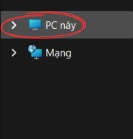
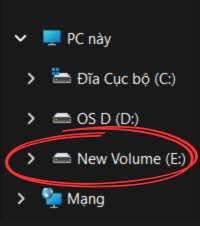
-
03. Khởi tạo cấu trúc cây thư mục gốcThực hiện nhấp chuột phải tại không gian trống của phân vùng lưu trữ, kích hoạt ngữ cảnh lệnh
New -> Folder. Tiến hành định danh thư mục gốc theo chuẩn cấu trúc:ThucHanh_Doãn Anh Đức.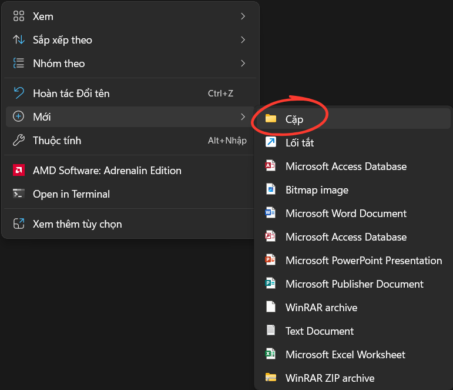
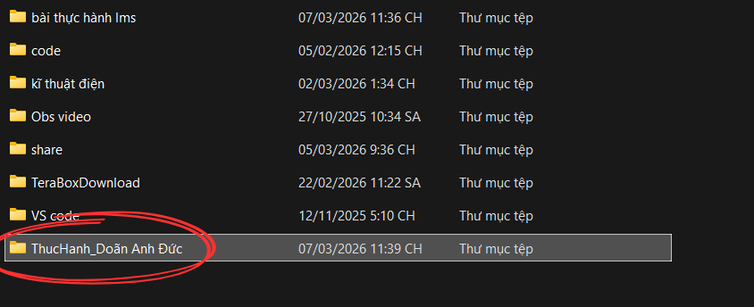
-
04. Điều hướng sâu vào không gian lưu trữ mớiThực hiện thao tác nhấp đúp chuột vào thực thể thư mục vừa khởi tạo để truy cập vào môi trường làm việc trống bên trong.
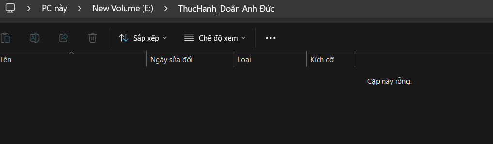
-
05. Khởi tạo tệp tin văn bản (Text Document)Sử dụng lệnh chuột phải tại vùng trống bên trong thư mục mới, chọn
New -> Text Document. Tiến hành đặt tên ban đầu cho thực thể tệp tin làGhiChu.txt.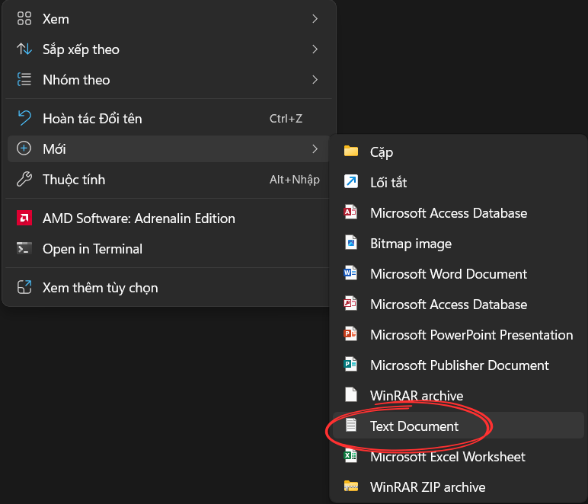
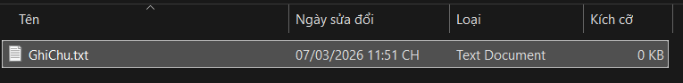
-
06. Thực hiện định danh lại tệp tin (Rename File)Click chuột phải vào đối tượng
GhiChu.txt(hoặc bấm chọn và dùng phímF2), chọn tính năng Rename. Chuyển đổi định danh cũ sang cấu trúc tên mới:GhiChuQuanTrong.txt.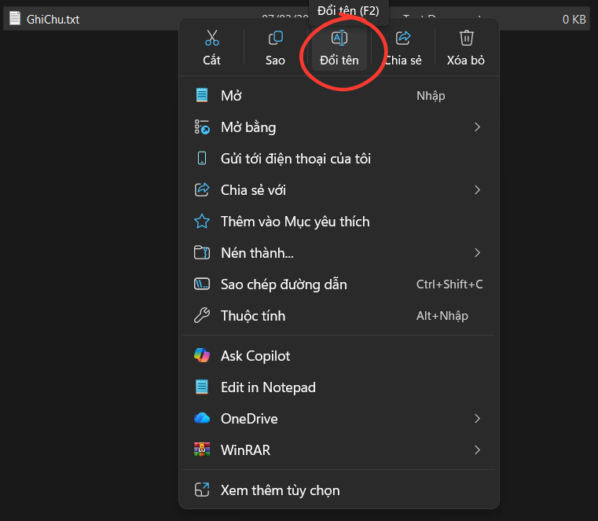
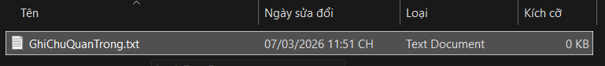
-
07. Phân nhánh và xây dựng thư mục conBên trong không gian làm việc chính của thư mục mang tên mình, tiếp tục khởi tạo thêm một phân nhánh thư mục con cấp hai với định danh là
TaiLieu.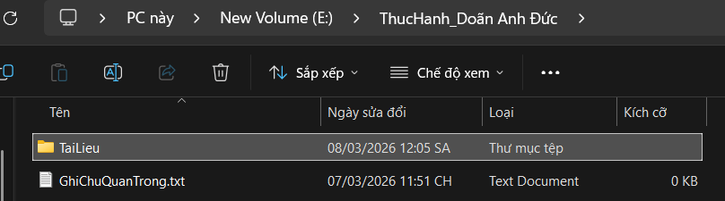
-
08. Thao tác sao chép dữ liệu (Copy & Paste)Click chuột phải vào tệp
GhiChuQuanTrong.txtchọn lệnh Copy (hoặc phím tắtCtrl + C). Di chuyển sâu vào thư mục conTaiLieu, sử dụng lệnh Paste (hoặc phím tắtCtrl + V) tại khoảng trống để tạo một bản sao dữ liệu song song.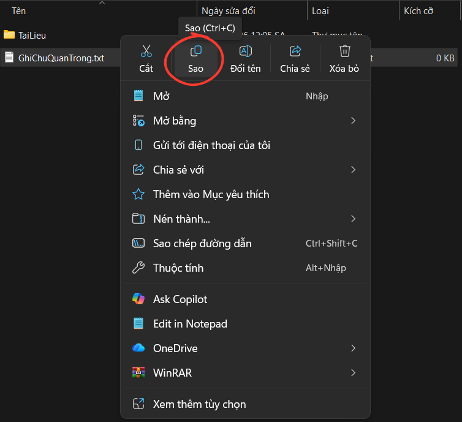
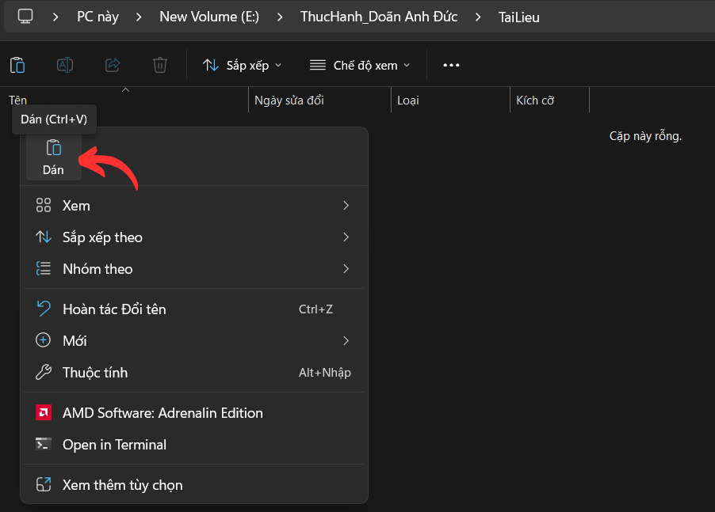
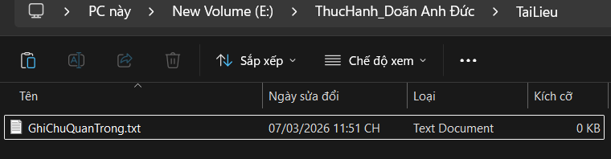
-
09. Thao tác di chuyển thực thể dữ liệu (Cut & Paste)Quay lại thư mục gốc ban đầu, khởi tạo một tệp tin văn bản mới định danh là
DiChuyen.txt. Click chuột phải chọn lệnh Cut (hoặc phím tắtCtrl + X). Truy cập vào mục thư mục conTaiLieuvà thực hiện Paste. Khi đó, thực thể tệp tin tại thư mục gốc sẽ được xóa sạch và chỉ lưu vết tại vị trí đích mới.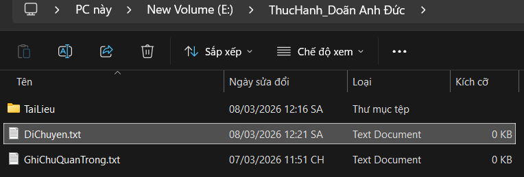
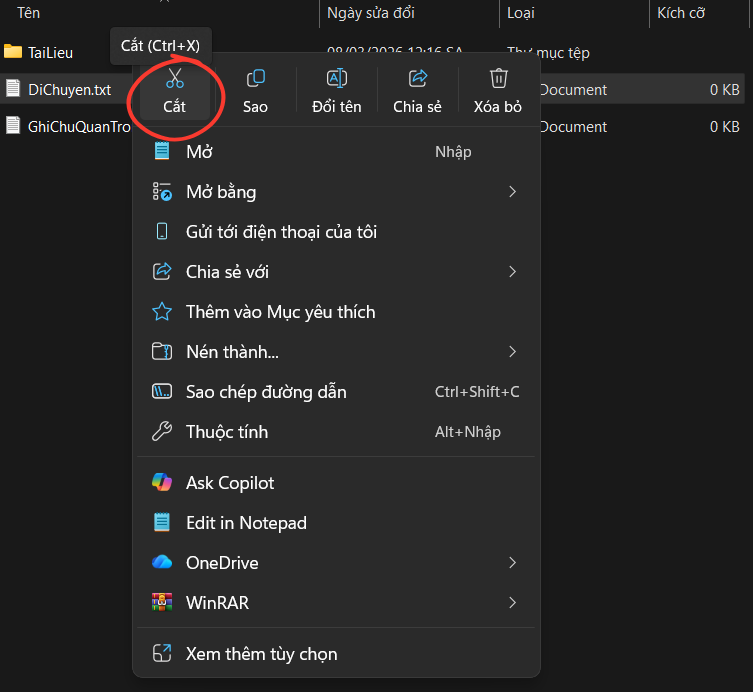
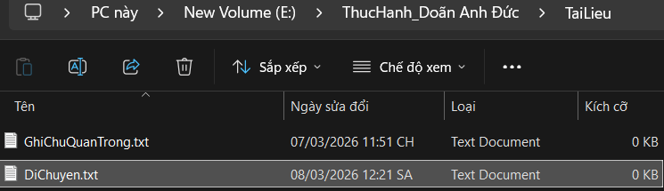
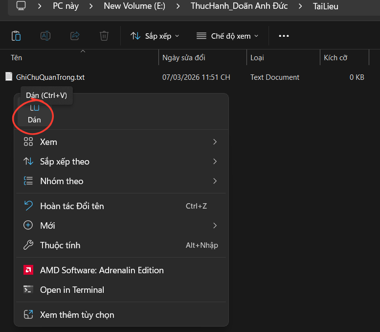
-
10. Thao tác xóa tệp tin logic thông thườngTại thư mục con
TaiLieu, click chuột phải vào thực thể tệp tinGhiChuQuanTrong.txtchọn lệnh Delete. Tệp tin lúc này được hệ thống nén tạm thời đưa về vùng lưu trữ đệm Recycle Bin (Thùng rác hệ thống).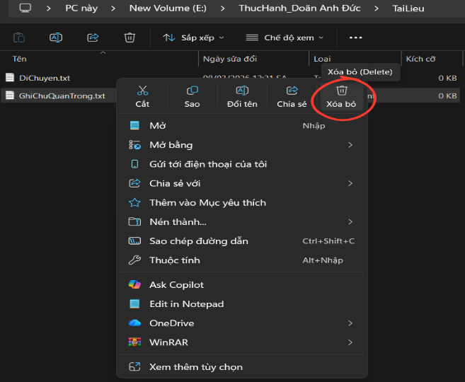
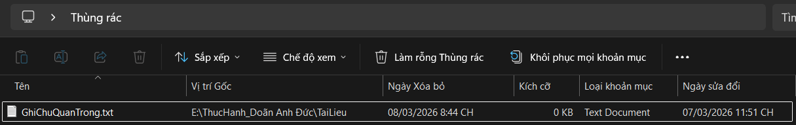
-
11. Thực thi lệnh xóa vĩnh viễn (Hard Delete)Lựa chọn thực thể tệp tin
DiChuyen.txt, thực hiện nhấn giữ tổ hợp phímShift + Delete. Một bảng cảnh báo hệ thống sẽ lập tức hiển thị. Khi bấm xác nhận Có (Yes), tệp tin sẽ bị hủy hoàn toàn khỏi cấu trúc nhớ vật lý của ổ đĩa máy tính mà không qua bộ lọc Thùng rác.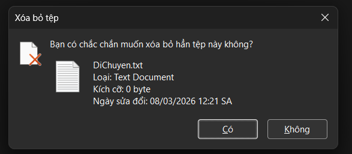
-
12. Khôi phục trạng thái dữ liệu (Restore)Mở ứng dụng Recycle Bin ngoài màn hình Desktop. Định vị chính xác tệp tin
GhiChuQuanTrong.txtđã bị xóa ở bước 10, click chuột phải và chọn lệnh Khôi phục (Restore) để đưa tệp tin về nguyên trạng đường dẫn ban đầu.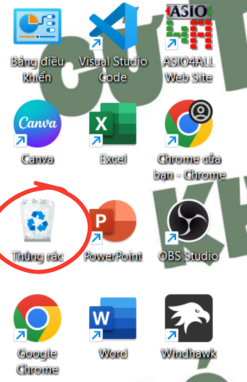
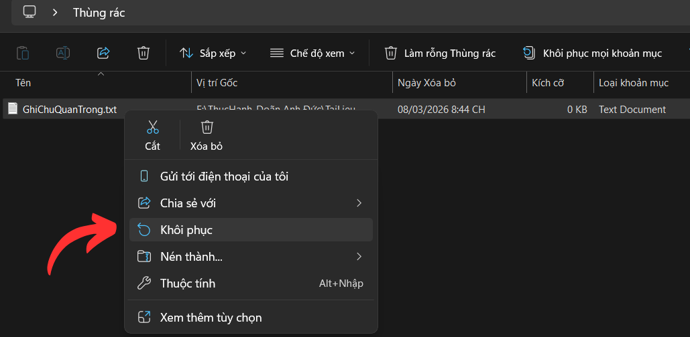
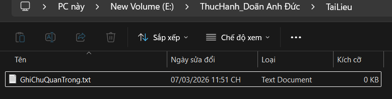